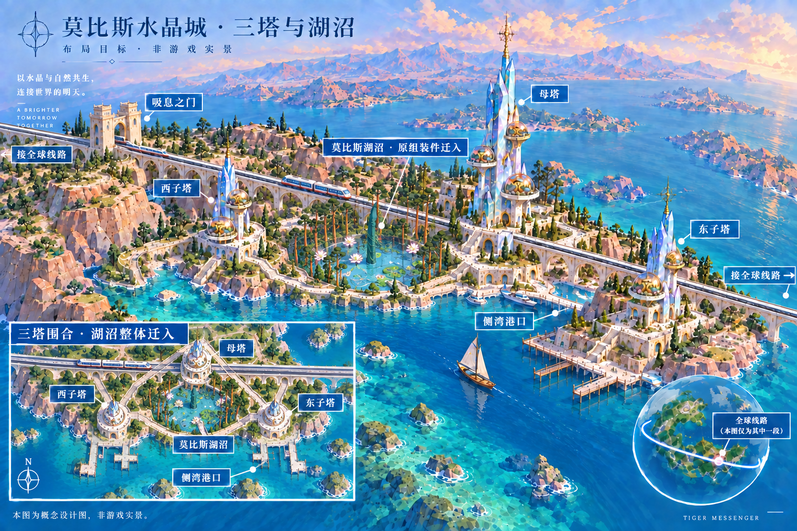
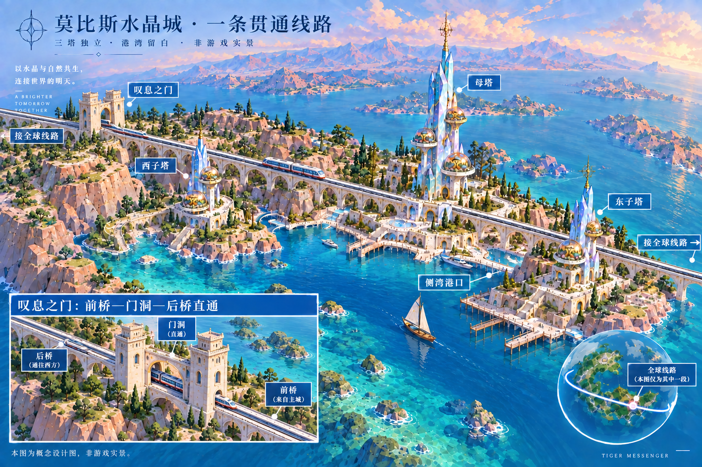
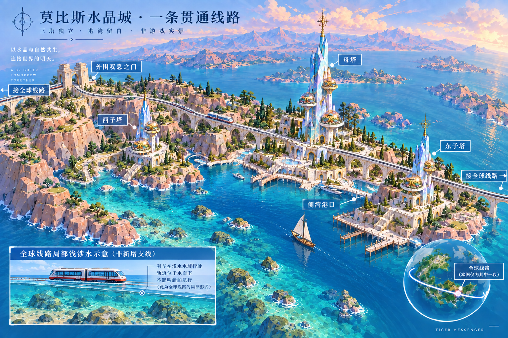
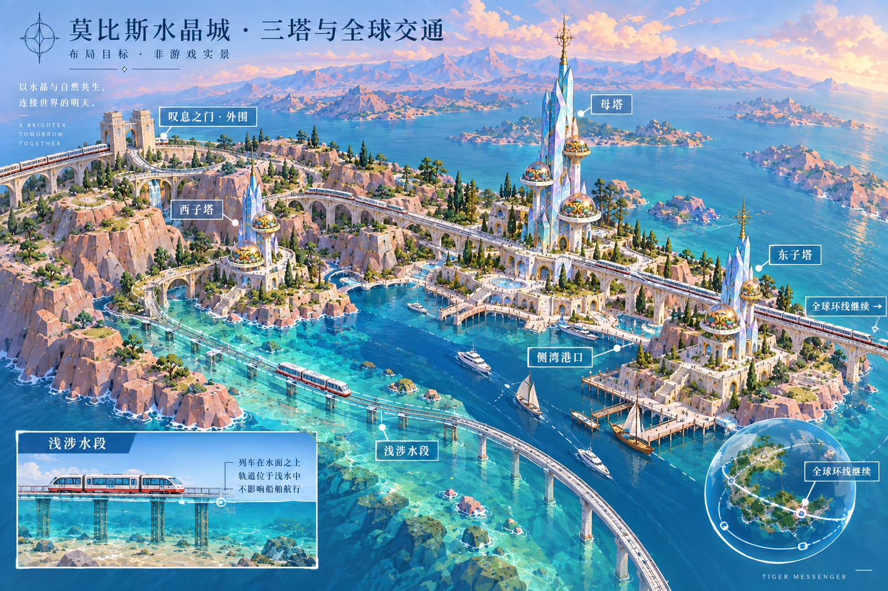
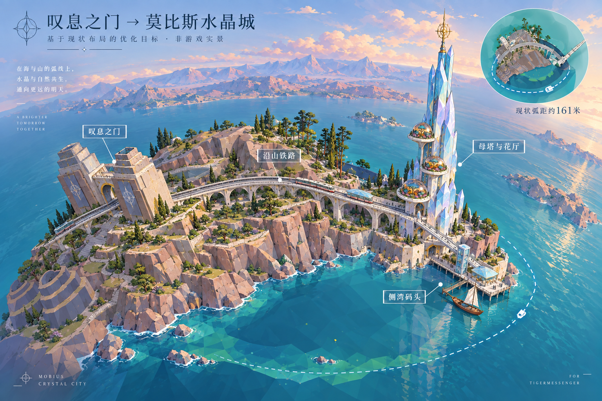
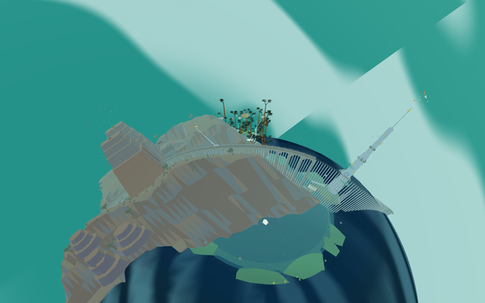
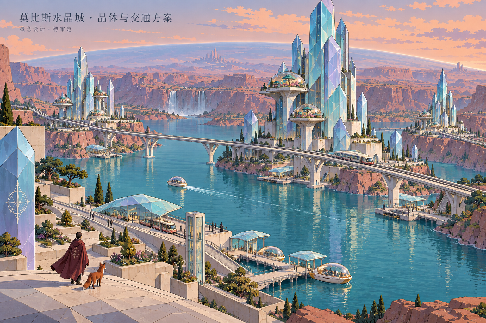
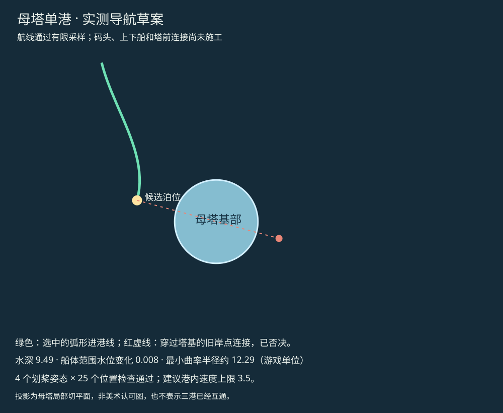
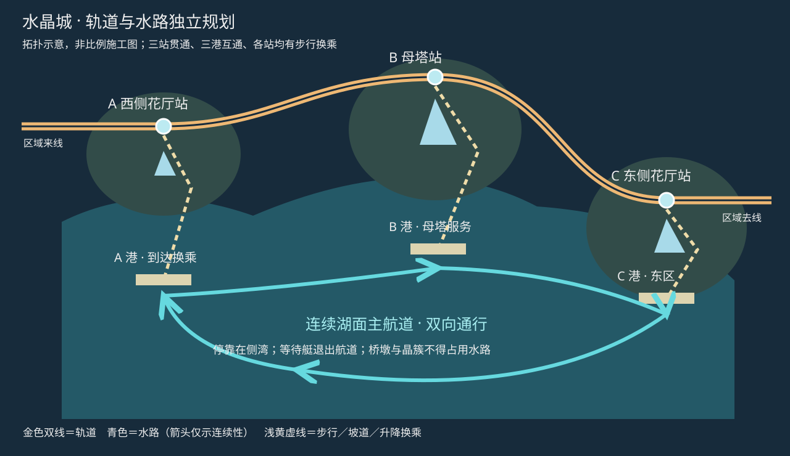
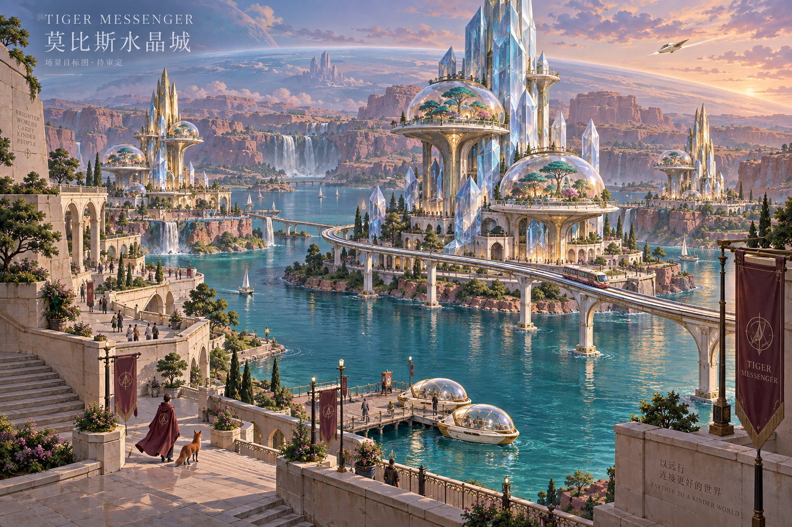

已接入：湖面几何修复
水面与深水盘已增加径向分段，保持湖岸范围和设定水位。逐三角中心最大水位误差 0.03，法线与浏览器检查通过；Godot 原世界两层湖面替换测试通过。
以下为原游戏实景，仍是旧城市布局，不是概念图已实现。旧桥净空、码头与交通接驳仍需继续处理。

2026-09-23 用户认可并授权构建。保留现有湖沼组装件，整体迁入西子塔、母塔、东子塔围合范围。前侧保留港湾航道，后侧仅一条贯通电车线路，叹息之门直通。

施工顺序：实测塔区和湖沼完整边界 → 三塔围合及岸台承托 → 湖沼与剧情附属整体迁移 → 车船与步行净空 → 实景对照及Godot同步。当前仍为目标图，运行时尚未迁移。磁盘空间不足影响构建，待恢复足够可写空间继续。
前桥、门洞、后桥沿同一轴线贯通；门口取消急转弯。需要转向时在远离门洞处采用缓弯。全城仍为一条双向电车走廊，两端接全球线路。

本轮是目标图修改，尚未修改运行时轨道。放大图的前后称呼仅用于本视角说明，施工以线路轴线及实际门洞净空为准。
按最新要求减少轨道：取消前景海上支线与门旁绕行线，保留一条贯穿三塔区域的双向走廊，两端接全球线路。三塔独立、叹息之门位于外围、港湾水路留空。浅涉水仅作为全球线路局部形式的独立示意，不新增城市支线。

本图为重绘目标，未改运行时轨道。下方旧版本保留作历史对照。示意图中的水深、桥高仍需实际净空验证。
按本次要求重绘：两座子塔独立展开；叹息之门与附属建筑退到峡谷外围；轨道延续全球线路，局部沿岸浅涉水。此图为设计目标，尚未搬迁游戏地标。

实施约束：保留原母塔及两座约45%尺度子塔；先测量再调整门区位置与山势。浅涉水轨顶应只略低于实际水面，车身保持水面以上；图中支撑高度和线路透视不作为施工尺寸。深水船道与浅轨道分开，交叉处必须测量净空。旧版约161米为现状测量，不再限制本次迁移方案。
JEV实际使用：上一轮文本分类输入873、输出91 token；没有对照实验，尚不能证明整体token节省。本轮图像由图像生成工具绘制，未把JEV当作视觉建模器。
叹息之门在左，山脊与连续铁路居中，现有母塔和三层错位花厅在右。两地现状弧距约161米。以下是目标设计，不是游戏实景。


拟优化山脊承托、铁路支撑节奏、母塔晶面与侧湾接驳。外湖虚线为规划水路，未作全程通航验收；本次没有搬迁地标。
v2待审定概念图，非游戏实景。强化大切面晶体、三组塔区和花厅；不以生成图片作为工程测量依据。

已测实际车船与两层水面：战船划桨包络宽 8.80，水线上最高点 7.28；红/蓝轨道最小曲率半径约 39.69 / 38.37（游戏单位）。
初次射线在水上 6.35 处碰到桥体构件；复核同处轨道高出湖面 33.50，不能将前者误判为桥面高度。需进一步定位桥墩或支撑，测完整船体通航空间。湖盘水位误差本轮已修复；旧运河—湖泊接驳仍未启用。
54 点采样中 40 点底床水深满足暂定余量；这不是整条航道验收，尚未完成船体横向扫掠和新港上下船验证。
水面与深水盘已增加径向分段，保持湖岸范围和设定水位。逐三角中心最大水位误差 0.03，法线与浏览器检查通过；Godot 原世界两层湖面替换测试通过。
以下为原游戏实景，仍是旧城市布局，不是概念图已实现。旧桥净空、码头与交通接驳仍需继续处理。
扩大检查到实际山体后，试制桥跨的通行测试失败；进一步 19 处横穿候选也遇到山肩、门区台基或浅水。试验桥跨已撤出正式场景，原桥恢复，湖面修复保留。
下一步从真实岸线找泊位，测试绕山的沿岸航道。三港尚未接通。
找到距母塔方向约 16 个游戏单位的候选泊位；水深 9.49，船体范围水位变化 0.008。弧形进港线通过 4 个划桨姿态 × 25 个位置检查，最小曲率半径约 12.29。
码头、塔前连接及上下船尚未施工。原岸点位于塔后，已否决直连，不能把这张导航图当作已建成港口。


画作方向：The Crystal Lake的晶体景观；The World of Edena的几何空间。William Stout对莫比斯配色的讨论用于色彩参考。交通拓扑是本项目设计，不声称来自画作。
图像限制：主塔尖仍贴边，正投影比例需后续另定；透视图中部分线路接续不可测，以上交通拓扑才是下一步检查依据。主图尚未用户批准，不更改现有模型。

本批完成第一处码头和升降连接；全城水晶造型与三港交通仍在后续计划中。
直接到母塔港试玩 · F 登船，S 离港、W 返港，靠泊后 F 下船。局部测定航线，不是全城自由航线。

实际游戏循环登船后的画面：

Godot 已同步几何、升降碰撞和停泊船；Godot 上下船尚未接入。原桥柱与母塔丘台仍需优化。